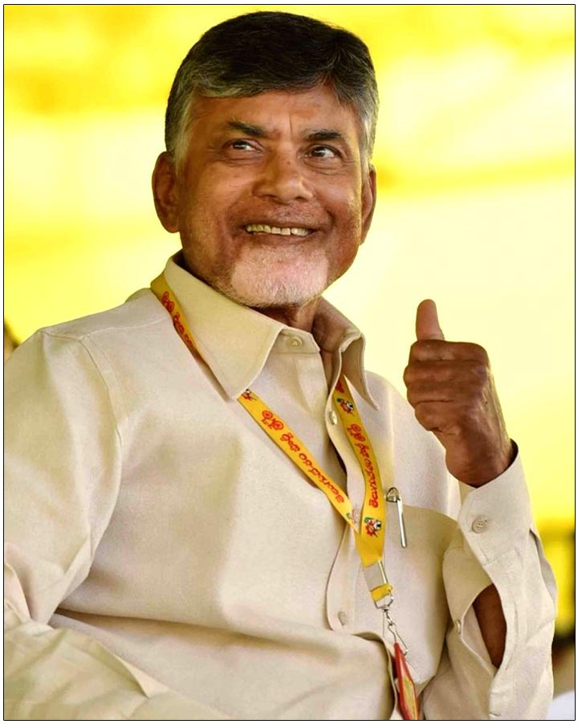

CHANDRABABU NAIDU

N. Chandrababu Naidu (born April 20, 1950, Naravaripalli, near Tirupati, India) is an Indian politician who, as head of the Telugu Desam Party (TDP), was the chief minister (head of government) of Andhra Pradesh state (1995–2004 and 2014–19) in southeastern India and became an important figure in Indian politics at the national level.

disclamier;provided by surya